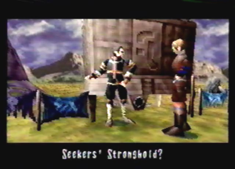
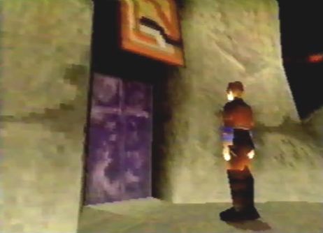
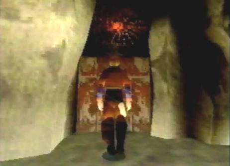

Enemies
Encountered (None) |
|
Diary Entry 26: The Seekers' Stronghold The Ghosts of the Ancient Ones Seeking a place of refuge, from the horrible hordes of monsters, I headed on over to the caravan. When I arrived, Raul told me a seeker was awaiting my arrival, and wanted to meet me. As I walked towards the back of the caravan, I spotted Jephthah, waiting by one of the wagons. I told him I was surprised he survived the attack on Zoah. He said he had come to the caravan to find me and gave me a message from Gash. He wanted me to meet him at the Seekers' Stronghold. I had never heard of such a place. "Not many people have," Jephthah said. He then handed me a Seeker Map, showing the location of the Seekers' Stronghold. I immediately departed, to go meet Gash. Upon arriving at the stronghold, Gash told me that he needed to make accommodations for Azel. The seekers were going to try and awaken her. I agreed to hand over Azel to their care. Gash then told me to meet him at the clearing within the stronghold, for he had something he needed to tell me. I proceeded to exit the cave we were in, and found myself just outside the stronghold. It was a wondrous place. Just behind the stronghold, was a giant waterfall! The massive stone beam I was standing on, was one out of many, that amazingly, held the stronghold up in the air. Each stone beam lead into a series of caves. I ran along the first stone beam, and entered the stronghold. I couldn't believe my eyes, Paet was standing before me, having a conversation with a female seeker named Rhagg. Standing far away, I eavesdropped on their conversation. The female seeker wanted Paet to join them. Paet refused her offer. Upon talking to him, he told me he had escaped in his airship, but it crashed shortly after. The seekers found him alive, and took him with them. He still couldn't get over the fact that Zoah was now in ruins. "Guarded by the Gods...My ass," he said. I told him it wasn't his fault. I said I would talk to him later, and walked through two large double doors, leading into the upper floor clearing. I saw Gash over in the corner. I decided I would first take a tour of the stronghold, before talking to him. First, I entered a purple door, to the left of the two double doors. Inside, I came face to face with Jared, the shop owner from Zoah. He had also survived the attack! While talking to him, he explained that he was also a seeker, and had been keeping a close watch over me, due to Gash's instruction. After talking to him again, he told me he had upgraded Radgam's Large Gun, and gave me an Assassin gun part. Before leaving, I bought a Pulverizer gun part, for the high price of 30,000 dynes. It was worth it, because this gun part packed the most firepower I had ever seen! Second, I entered a green door. I found myself in a grand library consisting of various books about the Ancient Age. I met a seeker called Zadoc, the compiler. He said he had been studying the Ancient Age, and gave me a book called Old Diary. It was the diary of the last dragon rider, and he said I should have it. Soon after, I examined the bookshelf directly above Zadoc. I found a book about the Tower, called Tower Report 3. Zadoc gladly let me keep it. I then asked him about the Town of Zoah. He said he had researched the Guardian Fire. There was an ancient record of a similar find, he explained to me. Zadoc then gave me a book called, Memory Report. I exited the room. Lastly, I entered a red door, the last door on the upper floor. Inside, was a type of medical room containing an ancient relic, that was treating Azel. I wondered how it worked. I also met a mute girl named Shella. There was not much I could do for Azel, so I let her be. I then walked down a ramp that lead to the bottom floor. There was another series of doors for me to enter and explore. First, I entered another purple door, located to the left of the ramp. Once inside, standing far away, I eavesdropped on a conversation between two seekers. They soon noticed my presence and introduced themselves. Simeon, a quester, welcomed me to their village. Next, Reuben, an apprentice quester, introduced himself. He was glad to know my dragon was friendly after all. Second, I entered another green door. This room contained more medical devices. There was not much else to see, so I left the room. Third, I entered two red double doors and found myself outside the stronghold, along another stone beam. I ran along the beam and entered another cave. This cave contained another relic. It had been modified quite a bit, by one of the seekers. I didn't want to mess with it, so I quickly left. Fourth, I moved up a set of stairs leading up to a red door. I was soon introduced to Ladha, the guardian. She told me not to worry about Azel, for she would surely wake up soon. I thanked her for her kindness, and moved on to the next door. Fifth, just to the left of Ladha's room, I entered another red door. Upon entering, I met another quester named Perez. He said the seeker way of life was new to him, and he still hadn't finished his training. He also wondered what it was like to ride my dragon. He said, " Let me ride him one of these days." I quickly left the room. Sixth, before going back up the ramp, I entered another purple door just beside it. Inside, I found a strange shrine made of wood and monster shells. I had no idea what it was for. It kind of gave me an eerie feeling, so I didn't stay inside the room for too long. Lastly, directly north of the purple door, I entered the last red door on the bottom floor. I was outside the stronghold once again, along another set of stone beams. This time, I had a choice between an upper path and a lower path. The upper path lead to a door that was apparently locked, so I entered the bottom door. This door lead inside another cave, and Bezer was inside it, along with the airship he and Paet escaped in. I guess it really did come in handy. Bezer wasn't so happy to see me, and asked me why I didn't save Zoah. He said I deserted the town. I hastily explained to him, I was a hunter in the wrong place at the wrong time. After the uncomfortable conversation, he told me to leave him alone. Before I departed, he said he was going to live on his own, without anyone's help. I had explored the entire stronghold, so it was time to walk back up the ramp to the upper floor clearing, and go see what Gash had to tell me. As we walked throughout the stronghold, I asked Gash about the monsters and the Imperial Fleet. He said not to worry, his men were in position. He continued to say, that the seekers lead people to believe they were just a bunch of tomb raiders. Gash was their new leader. He lifted up his mask and revealed to me his identity. I was immediately surprised. We soon entered the room where I had seen that strange modified relic. Inside, Gash explained to me who the seekers really were, as well as their true purpose. Their only purpose was to completely destroy the Tower, that which controls the world and mankind's destiny. "I'm sick of being kept alive by the ghosts of the ancient ones," He said. Gash then pleaded with me to aid the seekers cause, and destroy the Uru Tower, with the help of my dragon and Azel. "The Divine Visitor is the dragon itself," he exclaimed. I agreed to help him. He then told me to seek the fine details from Zadoc, the compiler. I headed over to the vast library of ancient knowledge, to ask Zadoc how I would go about destroying the Tower. He said Azel's true purpose was to open the path to Sestren, a living network that controlled all Towers. Sestren could be found within a group of astral passages beyond the human world. If Sestren were to be destroyed, all the active Towers would be no more. With this vital knowledge, I went to check up on Azel, in the medical room. As I entered, I found Gash already inside. It wasn't too long before she awoke from her nightmare. It was the first time she had experienced a dream. Before we could say anything more, a fellow seeker barged into the room, to warn us of impending danger. Monsters and the infested Grig Orig were heading directly for the stronghold! Gash immediately rushed off to the observation deck. I knew he must be going to that locked door, just above Bezer's location. Before departing, Azel asked me for my name. "I'm Edge," I said. I quickly ran out of the room. On my way to the observation deck, I ran into Perez and Rhagg. They were talking about a shrine, surrounded by four ruins, found in the Forest of Zoah. I had no time to listen in further. I soon arrived at the observation deck. Gash was at the lookout post, observing the infested Grig Orig's movements. Everyone on the ship was being eaten alive! It was out of control, and was drawing closer to the stronghold. Unexpectedly, a blast of energy from the ship landed a direct blow near the observation deck! It had to be stopped. Gash was confident that I was the man for the job. Before exiting the stronghold, I went to find Paet, to warn him of the immediate danger. I found him observing the modified relic. He told me that Bezer had taken the airship and left. He wanted to get away from all of the fighting. Bezer had made a reckless move. It was just too dangerous on his own, but I had no time to go and assure his safety. At the exit of the stronghold, I eavesdropped on a conversation between Azel and Shella. Shella actually spoke to Azel! I told Azel I would be leaving, to the Forest of Zoah, and quickly departed. Night soon arrived, and I wouldn't be able to fight Grig Orig effectively, so I stayed at the caravan for the night. During the bitter cold night, I found An'jou sitting by the fire. He had returned from his fruitless journey without the Tobitama Rock, and was glad to see that I was the one to save Enkak's life. He showed his gratitude by giving me a Berserk Vampire gun part, the most valuable item in the caravan. In the morning I departed for the Forest of Zoah, to put an end to the infested Grig Orig.
|
|

| Divine
Overview |
|
 1. Head on over to the caravan. You'll find a seeker out back. He explains to Edge that Gash wants to meet him at the Seekers' Stronghold. He then gives you the Seekers Map. This map shows the location of the stronghold. |
2. With the Seekers Map now in your possession, you can now go to the Seekers' Stronghold: Camp. Its location can be found to the far right of the World Map. |
3. Upon arrival, Gash will explain that he needs to make accommodations for Azel. The seekers are going to try to awaken her. Choose to let Azel be taken into the seekers care. Gash will then tell you to meet him later at the clearing, within the Seekers' Stronghold. Your current location, is the final campsite in the game. Once you leave, you can chose to go back to the World Map or enter the Seekers' Stronghold. Enter the Seekers' Stronghold. |
|
4. The Seekers' Stronghold is a wondrous place. The central stronghold lays in front of a beautiful waterfall, and is held up by thick beams of solid stone, leading into a series of caves. Enter the first opening, leading inside the stronghold. |
|
5. You will now be at the entrance, leading into the upper floor of the stronghold. You can eavesdrop on a conversation between Paet and the female quester Rhagg. Make sure you are far enough away, so that when you lock-on to them, the cursor turns blue. Depending on who you lock-on to, you can hear two different conversations. It's also good to see that Paet survived the attack on Zoah. |
|
6. Upon entering the two double doors, you will be on the upper floor clearing of the stronghold. Gash is waiting patiently, to talk to you. Don't engage him in conversation just yet. First, I'll give you a tour of the Seekers' Stronghold. |
|
Seekers' Stronghold Tour  7. Just to the left of the two double doors, enter the first purple door. |
8. You'll find yourself face to face with Jared, the shop owner from Zoah! Looks like he survived too. Apparently, he was a seeker all along. Talk to him twice. If you previously sold Radgam's Large Gun to him, he'll give you an Assassin gun part. This is a good time to stalk up on supplies, and if you have enough dynes (30,000 to be exact!), make sure to definitely buy the Pulverizer. It's the strongest gun in the game, and an essential asset. |
|
9. Second, enter the green door. |
10. You will be in a grand library, containing books about the Ancient Age. You'll be introduced to Zadoc, the compiler. After talking to him, he will give you Old Diary X 1. Next, examine the bookshelf directly above him, to get Tower Report 3 X 1. Lastly, if you talk to Zadoc once more, you can learn about various topics. Choose to learn about the Town of Zoah. After doing so, you will receive Memory Report X 1. |
|
11. lastly, enter the red door. |
|
12. You will be inside a medical room, where Azel is being treated. Also, you will meet a mute girl named Shella. As you can see, she doesn't talk much, but seems to be interested in Azel. |
|
13. Next, proceed down the ramp leading to the bottom floor. The bottom floor has another set of doors for you to enter and explore. |
|
14. First, At the base of the ramp, and to your left, enter the purple door. |
|
15. Inside, you will meet the quester Simeon, and the apprentice quester Reuben. Again, if you stand far enough away, you can lock-on to any one of them, to eavesdrop on their conversations. |
|
16. Second, enter the green door. |
17. Therein, you'll find another medical room. The seekers have many mysterious Ancient Age devices. |
|
 18. Third, enter the red double doors. |
19. Upon doing so, you will be outside the stronghold, running along one of the massive stone beams. Run along, and enter the cave. |
|
20. Inside the cave, a room containing a modified relic, can be found. I wonder what it's for? |
|
21. Fourth, walk up the stairs and enter another red door. |
22. This is the grain storeroom, and residence of Ladha, the guardian. |
23. Fifth, enter the red door near the stairs, leading up to the ramp. |
|
24. Perez, the quester awaits inside, to greet you. |
|
25. Sixth, before going back up the ramp, make sure to enter the two remaining doors, located beside it. Enter the purple door. |
|
26. Once inside, you'll find a strange shrine of some sort, made from wood, and monster shells. |
|
27. lastly, enter the red door directly under the ramp. |
|
28. Once again, you will be outside the stronghold. This time you have the choice between two paths. The upper path leads to the observation deck, but is locked for the time being, so take the lower path. |
|
29. Inside, Bezer and the airship he and Paet escaped in, can be found. Bezer is furious at Edge, for not saving Zoah in time. He wants to be left alone, to live on his own. Now that you've fully explored the Seekers' Stronghold, it's time to go back up the ramp to the upper floor clearing, to have a long conversation with Gash. |
|
30. A long conversation between Gash and Edge will ensue. Gash explains who the seekers really are, as well as their true purpose. Gash further explains, that once the Towers are destroyed, man will truly be free to control his own destiny. In order to do this, Sestren, the living network that controls all Towers, must be destroyed. Edge and his dragon are mankind's only hope for true freedom. Your next task, is to seek further information about Sestren from Zadoc. |
|
31. Zadoc tells Edge that Azel's true purpose is to open the way to Sestren. Sestren can be found within a group of astral passages beyond the human world. Azel is the key to reaching Sestren. After hearing this valuable info, go check up on her, in the upper floor medical room. |
|
32. Azel will finally wake up from her dark nightmare. She has experienced a dream for the first time in her life. |
|
33. Soon after Azel awakens, a fellow seeker unexpectedly barges into the room, to warn Gash of impending danger. Monsters and the infested Grig Orig are heading towards the stronghold! |
|
34. Before Gash and Edge depart, Azel asks Edge to tell her his name. He kindly tells her, then leaves for the observation deck. |
35. On your way to the observation deck, you'll find Perez and Rhagg having a conversation. Eavesdrop on them, to hear about a strange shrine, surrounded by four ruins, that can be found in the Forest of Zoah. What could this be? You'll find out, when the time is right. If you forgot where the observation deck is, Rhagg will gladly give you directions. |
|
36. If you head back inside the grain storeroom, you can find Ladha having a conversation with Shella. Again, if you're far enough away, you can eavesdrop on their conversation. |
|
37. Once inside the observation deck, you'll find Gash at the lookout post, observing the infested Grig Orig's movements. Their crew is being eaten alive! |
|
38. The Flagship is infested with hordes of monsters, and not a single crew member has escaped with their life. It's heading towards the stronghold, so your next objective is to go to the Forest of Zoah, and stop it in its tracks. |
|
39. From the observation deck, head down into the lower cave, where Bezer was located. Well, he seems to be missing. Where could he have gone off to? |
40. You can find Paet studying the viewing device Gash showed you. He will sadly tell you that Bezer took the airship and departed on his own, away from all the fighting. |
|
41. Near the exit of the stronghold, Azel can be found having a conversation with the mute girl Sheela. She's not so mute anymore. Eavesdrop to learn about Shella's past, as well as where Azel was born. Also, talk to Azel to learn something else about her. Now exit the Seekers' Stronghold. |
42. Before heading off to the Forest of Zoah, return to the caravan at night. An'jou has returned from his fruitless journey, and is happy to see that you were the one to save Enkak's life. He will gladly give you a Berserk Vampire gun part, to show his gratitude. |
|
43. Now, it's time to put a stop to the monster infested Grig Orig. Enter the Forest of Zoah! |